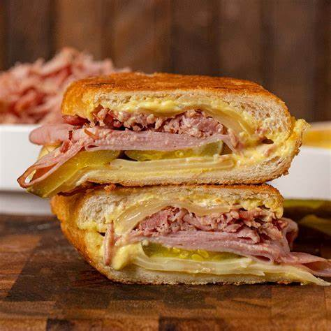

Cuban

A Cuban sandwich (Spanish: Sándwich cubano) is a variation of a ham and cheese sandwich that likely originated in cafes catering to Cuban workers in Tampa or Key West, two early Cuban immigrant communities in Florida centered on the cigar industry. Later on, Cuban exiles and expatriates brought it to Miami, where it is also very popular. The sandwich is made with ham, (mojo) roasted pork, Swiss cheese, pickles, mustard, and sometimes salami on Cuban bread.
ingredients
- 1/4 cup of mayo
- 1/4 cup of mustard
- 1 pinch cayenne pepper
- 8 slics of swiss cheese
- 6 thin slices smoked fully-cooked ham
- 1 and 1/2 cups cooked pulled pork, heated
- 1 large dill pickle, thinly sliced lengthwise
- 2tablespons butter, or as needed
Directions
- Gather all ingredients
- mix mayo, mustard, and cayenne together in a bowl to make sauce
- trim off ends of bread. cut loaf in half and evenly split bread to make tops and bottoms of two sandwiches
- Spread each half on both sides generously with mayo-mustard sauce.
- Divide sandwich ingredients between the two bottom halves in this order: 2 slices Swiss cheese, 3 slices ham, hot cooked pork, pickle slices, and 2 more slices Swiss cheese. Place tops on sandwiches.
- Melt butter in a heavy skillet over medium heat. Place sandwiches in the skillet and press down with a heavy weight, such as another skillet or foil-wrapped bricks. Toast sandwiches until bread is crisp and filling is heated through, 3 or 4 minutes per side.
- Serve hot and enjoy!